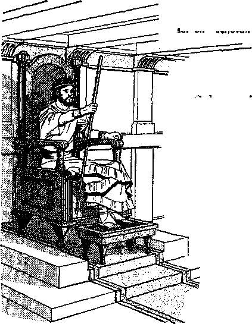
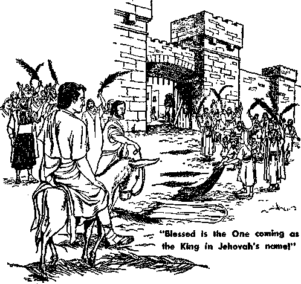

THE THRILLING MESSAGE contained in these pages will fill lovers of righteousness with an earnest desire for the time when the kingdom of God will shower blessings on those who dwell in all the earth. Furthermore, It will strengthen their conviction of the certainty of the realization of these marvelous promises contained in the Holy Bible.
This heartwarming message was delivered as the principal discourse at the “Everlasting Good News” Assembly of Jehovah’s Witnesses. An assembly such as this, scheduled to convene in twenty-four principal cities around the world from June 30 through September 8, 1963, brings this best of good news to people of many nations. By the publication of what was said on that occasion it is our: hope that it will bring joy to the hearts of millions more who receive a printed copy.
—The Publishers
Copyright, 1963 by WATCH TOWER BIBLE & TRACT SOCIETY OF PENNSYLVANIA Publishers Watchtower Bible and Tract Society of New York, Inc.
International Bible Students Association Brooklyn, New York, U.S.A.
Unless otherwise indicated. Scripture quotations are from the New World Translation of the Holy Scriptures, 1961 edition.
Made in the United States of America
PEOPLE all around the globe want an improvement in the government over them. There are men who are convinced that they can bring about the betterment desired in government, and they want to be the government and insist on being it. Suppose that people everywhere were given the freedom of choice and a free election were held in which every adult person could vote without fear, which particular man would they all vote to have over them as king or ruler? Which man would even the majority of the people want to have as the one ruler over all the earth? Can any man or any group of men prominent in world affairs today recommend a candidate for such an office? Is there any man having their confidence who is qualified for such a world-important job? Could any man prove satisfactory in the job? And after he died, what other man would be fit to succeed him? Are people to be divided up forever into many national groups, each within its own sacred boundaries and with its own set of rulers over it and its own style of government and laws? These are practical questions. As we study them it makes us realize the difficult situation of all mankind.
2 Today many realistic people believe that it would be dangerous to entrust world government to any one man, even if he were assisted by a cabinet of men having charge over various depart-
1. (a) What common want do people everywhere have? (b) What timely questions on this matter face us?
2. How do realistic people view a one-man government?
3 ments. Those who know and understand imperfect, selfish human nature shrink from such an idea. The job of world rulership is too big for any one man.
3 What shall we do, then, since the need for a unified rulership of all the human family grows greater all the time? The expenses of running a national and local government keep increasing year after year. The problem of not enough jobs for able-bodied men and women to earn a living becomes more complicated as the use of machines for human labor spreads. The terrific rate at which the human family is increasing without birth control and because of helping old people to live longer raises the question of how to feed them all when our small earth gets more crowded. No one wants to lower the earth’s population by killing off the excess people with a third world war. It is feared that with the present military preparedness such a world war would kill off too many; it would, in fact, kill off all mankind, despite shelters underground against nuclear attack. Seemingly, it is within mankind’s power today to commit world suicide. The situation looks impossible!
4 In this day medical science is trying to improve human birth. Suppose, now, we should try to produce a perfect child from an unmarried girl in the best of physical and mental form but without her having sexual union with a man and without what they call “artificial insemination.” That would be impossible, everybody would say.
3. Name some of the problems facing any government on earth today.
4-6. (a) What would be the general opinion of people if a suggestion were made to try to produce a perfect child? (b) Was such a thing impossible for Jehovah? (c) Just what did Jehovah do in this regard?
Once there existed a need to produce such a child here on earth. For man such a thing was impossible then, even as it is impossible today. But it was done. It did not prove impossible.
5 Not impossible for whom? Not impossible for man’s Creator, who is also the Creator of all things in heaven and earth, of the things seen and unseen. Almost two thousand years ago he sent his messenger, named Gabriel, from the invisible heavens to announce the birth of a child who would one day become king over the whole earth. The angelic messenger Gabriel located the girl who was to be the mother of this future king. She was a young unmarried woman in the small town of . Nazareth, about seventy-five miles , southwest of the ancient city of Damascus in Syria. This virgin girl was a descendant of a king named David, who used to rule in old Jerusalem, the
You will give birth to a son, Jesus, Son of the Most High'
location of which is now in the land of Jordan. But David’s royal line of successors had been overturned, dethroned, more than six hundred years before this coming of the heavenly messenger. It was now the Creator’s time to produce the descendant of King David who would take the throne over the whole earth for the sake of all mankind. The angel Gabriel said to the virgin girl:
8 “Have no fear, Mary, for you have found favor with God; and, look! you will conceive in your womb and give birth to a son, and you are to call his name Jesus. This one will be great and will be called Son of the Most High; and Jehovah God will give him the throne of David his father, and he will rule as king over the house of Jacob [his forefather] forever, and there will be no end of his kingdom.”
7 As the girl Mary was unmarried and the angel Gabriel said nothing to her about a husband, she did not see how she could become the mother of an everlasting king. So she said to Gabriel: “How is this to be, since I am having no intercourse with a man?”
8 Then, in order to explain how the only virgin birth of a man on record would come about, the angel Gabriel said to Mary: “Holy spirit will come upon you, and power of the Most High will overshadow you. For that reason also what is bom will be called holy, God’s Son. . . . because with God no declaration will be an impossibility.” Mary agreed to let God perform his will toward her.*
* See Luke, chapter 1, verses 26-38, in the Holy Bible.
7. What was the reaction of the young unmarried woman Mary?
8, a. How did Gabriel satisfy Mary’s mind and later the mind of Joseph?
9 God’s declaration to Mary by his angel Gabriel did not prove to be an impossibility, no, not for God the Most High. Some time later Mary, though still unmarried and not living with a man, was found to be pregnant. Not knowing God’s power to produce a virgin birth of his Son on earth, people thought that Mary had violated her virginity, immorally. But an angel from God corrected the wrong understanding of Joseph of Nazareth and he married Mary.
10 About six months after Joseph took her, Mary gave birth to her firstborn son, whose name was called Jesus. However, he was born in Bethlehem, about five miles south of Jerusalem, and where King David himself had been born.* This fulfilled a prophecy that had been made by a man named Micah of that neighborhood over seven hundred years before then. Pointing forward to the fact that the child whose birth he foretold would be a ruler of world importance, Micah said as God’s inspired mouthpiece: “You, O Bethlehem Eph-rathah, the one too little to get to be among the thousands of [the tribe of] Judah, from you there will come out to me the one who is to become ruler in Israel, whose origin is from early times, from the days of time indefinite.” (Micah 5:2) God Almighty made it possible for the man Micah to foretell so many centuries in advance the birthplace of this important ruler.
11 It remains a fact, therefore, that, if the royal families and the politicians on earth today cannot
» See Matthew 1;1 to 2:6; Luke 2:1-20.
io . Of what significance was it that Jesus was born in Bethlehem?
11 . In spite of man’s failure to produce a ruler to unify our earth, why can we be confident that the situation is not hopeless?
bring forth a man to rule over all the earth for the unifying of all its peoples, God Almighty has someone worthy and capable to put in charge of the whole earth when the time for God’s kingdom arrives. So, despite the alarming conditions in which mankind finds itself today, the situation is not hopeless for us. If we learn about this God and what he has already done and will yet do for the sake of his kingdom over all mankind, and if we put our faith in God with whom nothing is an impossibility, we shall be of good cheer. Mankind can be saved from destruction. “With men this is impossible, but with God all things are possible.” That is what the miraculously born Jesus himself said about man’s salvation.—Matthew 19:26.
12 What has God already done for his kingdom over all the human family, and what will his kingdom mean to earth’s inhabitants? God has already done so much for the sake of putting his kingdom in universal control, that he will not now reverse himself and fail to carry through his purpose to glorious success. Because of what he has promised concerning his kingdom, he will not stop till he has proved all his declarations true, though they seem impossible to men and although the whole political and religious world may be against his kingdom. Regarding the triumph of his kingdom he has said: “Jehovah of armies himself has counseled, and who can break it up? And his hand is the one stretched out, and who can turn it back?” (Isaiah 14:27) Let us take courage, then, and continue our examination. It is not into something impossible.
12 . Is there any danger that Jehovah through his Kingdom arrangement may fail to bring about the fulfillment of mankind’s greatest needs? Why?
WHEN HE WAS RULER OVER PARADISE
13 In this day of great changes, when new nations are being formed with their own native governments, men are talking a great deal about the self-determination of the peoples and national sovereignty over territories. But amid all these discussions, who of mankind ever asks about the sovereignty of God over our earth? Who has the right more than God does to establish a royal government over all the earth? He is the Creator of the earth and of man and beast upon it. The earth, the whole globe, is His, and man and beast owe their lives to Him. In the Holy Book in which his deeds are recorded it is written right at the very start: “In the beginning God created the heavens and the earth.” (Genesis 1:1) Before ever he created man and woman, God created the lower animals, the fish, the birds, and the beasts of the earth. At that time he was in absolute charge of the earth, and all forms of animal life thrived, all this without man’s assistance.* Neither was there any man to dispute him. Finally God created man and woman as a creation separate and distinct from all the animals previously created and superior to them. God did not make man and woman cave dwellers and require them to live in holes in the ground. He created them perfect, with perfect minds, and put them in a beautiful park in which to enjoy peace, happiness and plenty as earthly children of God. He did not create them in a so-called Stone Age and oblige them to make stone weapons to fight and kill the animals. He made
» See the book of Job, chapters 38-41.
T3. (a) What governments are most of mankind interested in today? (b) Are they concerned with God’s government? (c) What had Jehovah done long before man ever came into existence, and what kind of a start did he give to newly created man? them earthly overseers over all the animal world, to have control over them without fear and even to domesticate some of them.
14 God had no fear of the earth’s becoming overcrowded with man and beast, but he said to the first man and woman in their human perfection in the Paradise of Pleasure: “Be fruitful and become many and fill the earth and subdue it, and have in subjection the fish of the sea and the flying creatures of the heavens and every living creature that is moving upon the earth.”—Genesis 1:26 to 2:25.
15 At man’s appearance on the earth about six thousand years ago, who was ruler over all the earth? Man, because he lived on it? No, but God, because he created it, and perfect man was merely the subject of God the universal Ruler. He was the Theocrat, which title means God-Ruler, and he had a theocracy over all the earth.
16 Were the perfect man and woman in the Paradise happy under that theocracy? They were perfectly happy, and they had before them the opportunity of living happily forever in that Paradise, provided they obeyed the heavenly Theocrat perfectly. When, finally, the whole earth became filled with the offspring of this perfect couple in Paradise, who, then, would be the ruler over all the earth? The first man and father of them all? No, but man’s Creator, the heavenly Theocrat. This was the original purpose of God the Creator. Todays merely six thousand years later, it is still his purpose. He has not changed his mind about
14. How do we know Jehovah did not fear there would be an overpopulating of the earth?
is-iz. (a) Who was mankind’s first ruler, and what opportunities were before them? (b) Would rulership change after the earth became filled with people according to God’s purpose?
WHEN GOD IS KING OVER All THE EARTH 11 it because today the billions of earth’s inhabitants are opposed to it.
17 As regards his declared purpose, he says in his inspired Book: “I am Jehovah; I have not changed.” (Malachi 3:6) Will it be impossible for him to realize his unchanged purpose of worldwide rulership? To judge him by what he has said and done in the past, the answer is a flat No! Today’s generation of mankind are yet going to see whether they can make it impossible for God the Creator to realize his purpose.
18 Who was it that started on the earth this business of making men kings to rule over certain territories? It certainly was not God the Creator. Think of it for a moment! Would he the Creator renounce his own position as Theocrat and appoint a man on earth to be the worldwide or even territorial king, especially an imperfect man, disobedient and out of harmony with God? Who, then, started the kingdoms of men and the world empires? Who is really responsible for the international government mixup we have today?
19 When God created the first man and woman, Adam and Eve, he became their heavenly Father. He properly expected and required of them to render childlike obedience, honor and loyalty and love to him as their Father and Life-giver. He had given them perfect life, and he had the right to take life away from them and destroy them if they disobeyed him and proved rebellious. This earth is only a very tiny part of God’s boundless domain; and as the Ruler over all creation in heaven and earth, he rightfully laid down the laws for the government of his perfect earthly creatures.
is. Why is it not reasonable to believe Jehovah made the start of having men rule on earth?
19. What requirements for man did God properly outline, and what would be the result if man became disobedient?
He published his law to man and said to Adam: “You will positively die," if you disobey my law. (Genesis 2:15-17; 3:3) This meant the taking away of disobedient Adam’s life, with no future existence for him anywhere.
REBELLION AGAINST HIS RULE
20 At this particular time, when all looked peaceable and promising, the question of sovereignty over the inhabited earth arose, and down to this twentieth century of our Common Era it has not been settled. But it will be settled in our day. Let there be no mistaking about that. Back there the question was raised in the invisible heavens by an ambitious son of God. He coveted the sovereignty over the earth, with mankind as his subjects. He set himself in opposition to God the Creator, his own Father. He thus made himself Satan, which name means Opposer. This rebellious spirit son slandered God his Father and thus made himself the Devil, which means Slanderer, Malicious Defamer. He used the serpent in the Garden of Eden to deceive the woman, Adam’s wife Eve, and thus the serpent became a symbol of him as a deceiver, and Serpent, yes, Original Serpent, became one of his reproachful names.—Revelation 12:9; 20:2.
21 By inducing selfishness in Adam and Eve he led them to break God’s law and take themselves out from under God’s sovereignty and put themselves under the sovereignty of the Serpent, Satan the Devil. For their rebellion God the Creator drove them out of the Paradise of Pleasure to live for some years, to bring forth offspring, and to die. He let them have their sovereign Satan the 20. Who first rebelled against God’s righteous rule, and why?
21. What resulted to Adam and Eve for disobedience, and so who now became their sovereign?
WHEN GOD IS KING OVER ALL THE EARTH 13 Devil. God appointed no king over them or their offspring.—Genesis 3:1-5:5.
22 Within seventeen hundred years from then the earth became filled with violence, and mankind in general had made its way of life a ruinous one upon the earth, a corrupt way. Was God concerned about this condition in the earth that he had created? Yes, indeed! How did he wipe out the ruinous condition? By transformation of human society, or by world conversion? No. But by destroying all the corrupt people. To his prophet Noah he said: “The end of all flesh has come before me, because the earth is full of violence as a result of them; . . . And as for me, here I am bringing the deluge of waters upon the earth to bring to ruin all flesh in which the force of life is active from under the heavens.”—Genesis 6:11-17.
23 For Noah and his family to survive the Flood God told him to build a huge floating ark, and to take specimens of various families of birds and animals inside. On the very day that Noah and his family entered the completed ark and the door was shut behind them, the deluge broke upon this terrestrial globe. Billions of tons of water from the heavens were precipitated upon the earth for forty days. Under God’s protection Noah’s ark floated safely upon the waters that rose mountain high, but all the world of corrupt people outside perished. What a demonstration this was of God’s control of natural forces! What a manifestation this was of God’s universal sovereignty!
24 Inasmuch as Jehovah God does not change,
22. How did God later show he was still very much interested in the earth he had created?
23. In what way did he show he was still Universal Sovereign?
24. Since God does not change, what can we expect in our day?
what a warning this destruction of a corrupt world by a global flood is to us today when the earth is once again filled with violence, when human violence in nuclear warfare threatens to wipe out the human race even without God’s having to do it himself! In our ears should ring the words of Jesus, the miraculously born Son of David, earth’s future King: “Just as it occurred in the days of Noah, so it will be also in the days of the Son of man: . . . when Noah entered into the ark, and the flood arrived and destroyed them all.” —Luke 17:26, 27; Matthew 24:37-39.
25 Noah lived three hundred and fifty years after the Flood, but before he died the first human king had established himself in the earth and the first empire on earth was begun. This was not by Noah, nor by God’s raising up such a king and founding such an empire. It was by a rebellious greatgrandson of Noah, namely, Nimrod. He was a killer, a hunter. Here is how one modern translation of the Bible record about him reads: “He began to be a mighty one in the earth. He was a mighty hunter before Jehovah: wherefore it is said, Like Nimrod a mighty hunter before Jehovah. And the beginning of his kingdom was Babel, . . . in the land of Shinar.”—Genesis 10:8-10, American Standard.
26 Jehovah God gave a setback to Nimrod’s imperial designs when he broke up Nimrod’s building operations by mixing up the language of the builders. Only after a long time Babylon rose to a position that dominated the whole inhabited earth. Because of its imperial plans it even destroyed the templed city of Jerusalem. But where is Babylon today, that mother of human king-
25. Who became the first human king on earth, and how does the Bible describe him?
26. Show how Jehovah’s sovereign power operated toward this human king’s plans. doms, that founder of man-made empires? Look, please, to the modem Republic of Iraq and to the banks of its Euphrates River, near earth’s thirty-second parallel. There you see only some broken-down ruins, dug up less than seventy years ago in a barren wasteland not now fit to live in. Here again is a historical proof of the universal sovereignty of Jehovah God.
27 How, then, did David the shepherd boy of Bethlehem (now in Jordan) come to be king of Jerusalem? Not in Nimrod’s way! But by God’s anointing of him to be king, at the hands of the faithful prophet Samuel. David was a descendant of Abraham, who is familiar to Mohammedans as well as Jews and Christians. Abraham proved himself to be a friend of Jehovah God. He loved God so much that he was willing to sacrifice his own beloved son Isaac if his God commanded him to do so. Because Abraham demonstrated this willingness, Jehovah God chose to be his people the descendants of Abraham through his son Isaac and his grandson Jacob. By means of marvelous miracles God gave this chosen people the land of Palestine to occupy. They had no visible human king over them. Jehovah, the God of Noah, Abraham, Isaac and Jacob, was their King, their Lawgiver, their Judge. Their government was a Godgiven one, a Theocracy. There was not another government like it on the earth. In its day it was the best government on earth. Worship of God meant obedience to the law of the invisible heavenly King of this theocratic government. He permitted no image to be made that would picture him visibly. By law he did not allow, his chosen people to worship him by means of any man-made
27. (a) How did David of Israel become a king? (b) Of whom were David and all Israel descendants? (c) What kind of a government did Israel have over it, and who was the ruler? image or by means of anything in nature as a symbol. As long as his earthly subjects obeyed and worshiped him they prospered.
28 However, about three hundred and fifty years after Jehovah God gave them the Promised Land in the Middle East, they got weak in faith and asked to have a visible human king. In this respect they wanted to be like the nations in all the rest of the earth. Was this worldly wisdom on their part really wise and in the best interests of their nation? No stronger answer to the question can we find than to look at the experience of the Jewish people over the past two thousand years. God forewarned them of the trouble that this change of rulership would bring upon them, and the first human king that he let them have proved this to them.
29 This first king went down in defeat before the enemy, and his son who succeeded him was murdered. It was at this crisis that Jehovah God gave them David as their anointed king, because he was a man in agreement with God’s own heart. Seated on the royal throne in Jerusalem, King David ruled as visible representative of his God Jehovah. He was said to sit on “Jehovah’s throne.” —1 Chronicles 29:23.
30 Because of David’s devotion to the worship of his God, Jehovah promised to keep the kingship in the line of David’s descent forever. (2 Samuel 7:1-17) The world-famous wise King Solomon was the first successor of David according to this divine promise or covenant. But the most important thing is that someone wiser than King
28 ,29. (a) How did Israel come to have human kings, and was it to their advantage? (b) How did Jehovah meet a crisis early in the kingship of Israel?
30. (a) How long was the line of kings to continue in David’s line? (b) To what grand climax did this lead?
David, on the royal throne in Jerusalem, sat on “Jehovah's throne’'
Solomon has been born in David’s line and has become everlasting heir of the king-ship. This one is he whose miraculous birth Jehovah’s angel Gabriel announced to Mary at Nazareth nineteen centuries ago. His name, Gabriel said, was to be called Jesus, because of the meaning of the name. It is a shortening of the name Jehoshuah and, according to Bible dictionaries, it means “Jehovah Is Salvation.” Almighty God has to make that name of his Son come true. To that end Jehovah
God let his Son die a sacrificial death and then resurrected him on the third day to immortal life in the heavens. God seated him at His own right hand in the heavens, far above the heights to which man’s rockets of today can reach in outer space.—Acts 2:22-36; 1 Corinthians 15:3-28.
GOD’S ANOINTED KING NOT WANTED
31 These are the historical facts. All the kingdoms, empires, republics and the United Nations and all other political alliances of our day cannot set aside those facts. If not well known in the Mohammedan world and in the world called pagan or heathen by Western nations, these Biblical and historical facts should be fully known by Christendom, the professed Christian world. In the face of these facts, which are beyond disproof, do any or all of the nations today want God the Creator as King over all the earth, including themselves? Introduce such an idea into the General Assembly or the Security Council of the United Nations, and, not merely the Communist bloc, but its one hundred and eleven member nations will laugh at you.
32 Today in this modernistic, materialistic age of accomplishments in outer space, the nations have no more faith in God the Creator than the Israelites did when they asked Jehovah’s prophet Samuel to set a visible, human king over them. The full meaning of their demand Jehovah God explained with these words: “It is I whom they have rejected from being king over them.” —1 Samuel 8:1-22.
33 Today who wants Jehovah God as king over earth? Not the nations. They do not want him any more than the Jews and the Romans wanted him as king nineteen centuries ago when his Son, Jesus Christ, rode into the city of Jerusalem and
31. Do the nations of earth desire God’s anointed king as ruler, and what would the reaction be to such a suggestion to members of the United Nations?
32. What quality does our modem age lack, leading to their rejection of whom?
33. (a) Who did and who did not want Jehovah as king 1900 years ago? (b) What action of the Jews and Romans shows their attitude? offered himself as king, while multitudes of the common people cried out: “Blessed is he that comes in Jehovah’s name! Blessed is the coming kingdom of our father David! Save, we pray, in the heights above!” “Blessed is the One coming as the King in Jehovah’s name! Peace in heaven, and glory in the highest places!” (Mark 11:1-10; Luke 19:28-38) As a sign of Jews and Romans refusing to have God as king over them, they refused his Son Jesus Christ. In an attempt to prevent God’s Son from ruling in earthly Jerusalem and over the land of Israel the priests had him arrested, given a mock trial, handed over to the Roman governor of Jerusalem, and under the pressure of a religious riot, given over to death by being nailed to a criminal’s stake.
«* But how vainly the faithless nations exerted themselves to block God’s purpose concerning this earth’s government! On the third day God, with whom nothing is impossible, raised his faithful Son from the dead as the everlasting heir of David’s kingship and exalted him to his own right hand to be a heavenly king. The nations can now kill him no more, but he can kill them unless they first destroy themselves in nuclear, bacteriological, radiological warfare. Though confronted today with the facts concerning this glorified Son of God who has the right of everlasting kingship, they take up the words the Jewish chief priest yelled to Roman governor Pilate: “We have no king but Caesar.”—John 19:15.
35 Their attitude toward having God as King and reigning through his Son Jesus Christ can be seen in the way in which they react to the preaching of the everlasting good news of God’s kingdom. Ever since 1914, the year in which World War I began, Jesus’ prophecy has been undergoing fulfillment, namely: “This good news of the kingdom will be preached in all the inhabited earth for a witness to all the nations; and then the end will come.” (Matthew 24:14) Though small at first, this witness to God’s established kingdom has grown, till today more than a million Kingdom witnesses are reported preaching publicly and from house to house in a hundred and ninety-four lands in a hundred and sixty-two languages. The Watch Tower Bible & Tract Society of Pennsylvania, America, with branch offices in ninety locations around the earth, has received reports from that many.
34. What did Jehovah do in behalf of his Son, and what attitude is still shown by this world?
35, 36. (a) How do we know the attitude of this world is no different today? (b) Yet to what extent is Jehovah’s kingship proclaimed?
36 But have the nations inside and outside of the United Nations organization accepted this preaching as good news? The fulfillment of Jesus’ own prophecy that his obedient followers would be persecuted for preaching the good news of the Kingdom gives us an answer, the meaning of which is unmistakably clear. (Matthew 24:9-13; 25:31, 41-45) The nations just do not want God’s kingdom by Christ to be preached by his witnesses, not to speak of actually having God’s kingdom rule over them and all the earth.—Luke 19:14, 27.
37 So have we now reached a stalemate? No! Well, then, whose sovereignty over our earth is to determine the future rulership over mankind, in order to bring improvement in government to perfection? The sovereignty of the nations of this world or God’s sovereignty over all his creation? Man, even nations of men, cannot win out against God. Human history proves that fact. Farsighted statesmen of the world, military experts and specialists on economics are continually warning us that there is disastrous trouble ahead for mankind, but they do not tell us what the real cause of it will be. The real cause is that men do not desire to turn the sovereignty of the earth over to God.
38 Men still try to determine their own times and seasons. They want to change God’s times for things on earth, but they cannot do so any more than they can prevent the sun from rising at its appointed time. The great king of ancient Babylon had to learn this lesson, and it was in connection with him that the prophet Daniel said in prayer to the Most High God: “Let the name of God be-
37. What timely question is now asked, and what is the only logical answer?
38. Like the king of Babylon, what facts must the nations come to know?
come blessed ... he is changing times and seasons, removing kings and setting up kings.” He gives the kingdom over mankind to the one to whom he chooses and anoints, and at his own due time. The mighty king of Babylon was obliged to admit: “All the inhabitants of the earth are being considered as merely nothing, and he is doing according to his own will among the army of the heavens and the inhabitants of the earth. And there exists no one that can check his hand or that can say to him, ‘What have you been doing?’ ”—Daniel 2:20, 21; 4:17, 25,35.
39 God has placed a time limit upon man’s exercise of sovereignty over the earth. That limit, according to God’s time schedule in the Holy Bible, was reached in the year 1914. There the time came for God to establish his kingdom in the heavens in the hands of his Son Jesus Christ, the permanent Heir of King David. Because the nations chose to follow the counsel of their religious advisers and not the instruction given in the Bible, the nations of Christendom began a world war in 1914 over the issue of world domination. Today, a half century later, they are trying to prevent a third world war over the very same issue.
40 It is very plain to see that, in all this, God the Creator is being ignored by men, to their own hurt. Since 1914, when the “appointed times of the [Gentile] nations” ended, all the nations of this world have been in their “time of the end.” (Luke 21:24; Daniel 12:1-4) They have continually been told of this by Jehovah’s witnesses, who, in the face of world opposition and persecution, have been preaching the everlasting good news of God’s kingdom.—Matthew 24:9-14; Mark 13:10.
39,40. Why is 1914 a marked year in human history, and into what time period have earth’s nations now entered?
•*1 God, not world politicians and statesmen, will determine when this “time of the end” shall close. Shortly the clock of universal time will strike the hour, and the “war of the great day of God the Almighty” will break out, not by accident or by human miscalculation, but because God has had enough of mankind’s opposition and ignoring of him. With destructive forces held in reserve for that great day he will at last fight to make his sovereignty universal so as to include this earth. That will be the real battle of Har-Magedon foretold in the last book of the Holy Bible. (Revelation 16:13-16) With crushing force it will come like the global flood of Noah’s day. There has never been a war like it, and there will never be another like it. So Jesus Christ, the everlasting Heir of the Kingdom, has foretold. Only men and women, like Noah and his family, who are in favor and support of God’s kingdom by his Son Jesus Christ will survive. Only they will be protected through the war of the great day to see Jehovah’s sovereignty in full, undisputed sway over the earth. —Matthew 24:21, 22, 37-39; 25:34.
THE LONG-DESIRED CHANGES
Concerning the permanent result of that decisive war of the great day of God the Almighty the prophecy of Zechariah 14:9 says: “And Jehovah must become king over all the earth. In that day Jehovah will prove to be one, and his name one.” Can we imagine the desirable changes that this will mean for our earth? We are not left to imagine and indulge in mere guesswork. We have the written Word of God, for whom no declaration
41. (a) Who determines when this time period will end, and what will mark its close? (b) Thus who only will survive the time of the end?
42. To whom will this decisive war bring kingship of our earth, resulting in what type of future for mankind? is impossible of fulfillment, and its prophecies tell us in advance, that we may be joyful in our hopes for the future of mankind. The future will be a time of rejoicing, just as Psalm 97:1 assures us, with the words: “Jehovah himself has become king! Let the earth be joyful. Let the many islands rejoice.”
43 Of course, the war of the great day against the opposers of Almighty God’s sovereignty will tremendously reduce the population of the earth, just as the global flood did in Noah’s day. Very likely the transportation systems and the various means of rapid communication will be broken down or paralyzed for the time being. It may be some time before the survivors of the end of this old system of things are able to get in touch with one another in the many lands. For example, the worshipers of the Sovereign God Jehovah are reported to be in 194 lands around the globe today. In this year of 1963 they flock together in this Round-the-World Assembly of Jehovah’s witnesses scheduled to be held in twenty-four prominent cities in the Northern and Southern Hemispheres of the globe.
44 No less so than now, rather, more so than now, Jehovah’s witnesses will be eager to communicate and get together after the universal war of Har-Magedon. The King Jesus Christ, whom Jehovah God puts in charge of earth’s inhabitants, will see to it that they do get in touch with one another and work together in Christian brotherhood, for it is written concerning Jehovah’s King: “In his days the righteous one will sprout, and the abundance of peace until the moon is no more. And he will have subjects from sea to sea and from the River [Euphrates, no more under Bab-
43. Outline some of the results of this decisive battle. 44. What attitude is now shown by Jehovah’s witnesses? ylon’s control] to the ends of the earth.” (Psalm 72:7, 8) He will leave none of his subjects isolated.
45 With all national human sovereignties destroyed in the war of Har-Magedon, and with only the one living and true God as the Sovereign over all the earth, what need will there be for the national boundaries on earth under Jehovah’s one King in charge of mankind? Such artificial national boundaries will be wiped out and will appear on no maps of that future time. The King Jesus Christ will deal with his subjects, not as nationalities, but as children, as his redeemed people for whom he laid down his perfect human life in sacrifice nineteen hundred years ago. (John 3:16) By loyalty and obedience to him they are really in line to get everlasting life through him, for he is to become the Everlasting Father to them.
48 The prophecy of Isaiah 9:6, 7 says of the Son of David who was born in Bethlehem and who has become King David’s everlasting Heir: “There has been a child born to us, there has been a son given to us; and the princely rule will come to be upon his shoulder. And his name will be called Wonderful Counselor, Mighty God, Eternal Father, Prince of Peace. To the abundance of the princely rule and to peace there will be no end, upon the throne of David and upon his kingdom in order to establish it firmly and to sustain it by means of justice and by means of righteousness, from now on and to time indefinite. The very zeal of Jehovah of armies will do this.” Thus all his earthly subjects will become the children of the King, all brothers in a brotherhood on a kingly basis.
45. Destruction of national sovereignties will mean what for surviving mankind?
46. What will be the relation of earth’s inhabitants to the ruler in that kingdom?
47 At the present time mankind are groaning under the taxation for the increasing expenses of government during this nuclear, space age. But not so then! What material support does Jehovah God as the Universal Sovereign need from mankind? He is the Creator of all things. The whole universe belongs to him. In arguing his case with mankind of today he says: “I will not take out of your house a bull, out of your pens he-goats. For to me belongs every wild animal of the forest, the beasts upon a thousand mountains. If I were hungry, I would not say it to you; for to me the productive land and its fullness belong.” (Psalm 50:1, 9,10,12) As regards his heavenly Son, Jesus Christ, whom he makes king over mankind, this Prince of Peace is the Heir of all things. (Hebrews 1:1-6) Mankind will not need to be taxed in order to maintain their King in material luxury and extravagance. He will not permit any oppression or extortion by any of his visible human representatives in the earth. (Psalm 45:16; Isaiah 32: 1, 2) The present “god of this system of things,” Satan the Devil, and his demons will be bound and imprisoned in what the Bible describes as an abyss or bottomless place, but with a cover of restraint over it.—Revelation 19:11 to 20:3.
18 When Jehovah God created the first man and woman in the Garden of Eden, he blessed them and commanded them: “Be fruitful and become many and fill the earth and subdue it.” (Genesis 1:28) Now, since the battle of Har-Magedon will make such a cut in the earth’s population that seems to be exploding today, how long will it take for the earth to be filled when God is king over
47. What other changes will be made for mankind’s common good?
48,49. (a) What interesting question now arises regarding repopulating the earth? (b) How are we assured the earth is to be inhabited? all the earth and rules through his Son Jesus Christ? From the flood of Noah’s day till now it has been more than four thousand years, and it has taken all this time to pass the mark of three thousand million inhabitants, despite two world wars and all the other wars and deadly calamities in the meantime. How long will it take after Har-Magedon to fill the earth,under God’s kingdom, and how will such a filled earth be fed, clothed and sheltered? This is no impossibility for God. His original purpose for our earth will be realized.
49 Isaiah 45:18 assures us that Jehovah God is “the Former of the earth and the Maker of it, He the One who firmly established it, who did not create it simply for nothing, who formed it even to be inhabited.” After he created the earth, he pronounced it very good. (Genesis 1:31) For these reasons he will never destroy this good earth, but it will abide and stand in existence for all time, regardless of what modern-day scientists or astronomers or false religionists say. (Ecclesiastes 1:4; Psalm 104:5) It will be inhabited to its fullness.
50 The new start to fill the earth with a righteous race of humans will get under way after the war of the great day of God the Almighty is over. It will begin with the earthly survivors of that universal war, as pictured by Noah and his family when they emerged from the ark of salvation after the Flood. (Genesis 9:1, 7) Married couples survived that Flood, and their offspring married, when of age, among themselves. Likewise, the battle of Har-Magedon will not dissolve the marriage ties of those surviving it, and we may reasonably believe and expect that marriages by 50. (a) When will the start to once again populate the earth begin, and who will have a part in it? (b) Under what type of conditions will offspring be born?
28 WHEN god is king over all the earth
single persons surviving Har-Magedon will be authorized by the King Jesus Christ, and their marriages will be fruitful with children. Although children then born from still-imperfect Har-Magedon survivors will not be born perfect, there will be no stillbirths or miscarriages or deformed children. They will be born in righteousness, by righteous parents, in God’s righteous new order, and there will then be no need for artificial birth control.
RETURN OF THE DEAD
51 However, marriage will not be the only procedure contributing toward the filling of the earth
51. What other grand provision has the universal king made for filling our earth, and in what way has he reassured man that it will happen?
Children will be brought forth in righteousness
with righteous subjects of God’s kingdom. The bringing forth of children by honorable marriage of Har-Magedon survivors and, in turn, by such post-Har-Magedon children will be approved by the King for evidently a limited time—for how many generations we do not know. Why so? Because it will have to take into account the fulfillment of a marvelous prophecy of God’s written Word. What promise? That of the resurrection of the dead, the resurrection of those whose names God has not blotted out of his memory as being too bad to be reformed. God’s resurrection of his own Son Jesus Christ from the dead was a guarantee of the resurrection of mankind in general. Jesus, looking forward to his kingdom, said: “The hour is coming in which all those in the memorial tombs will hear his voice and come out, ... to a resurrection.” (John 5:28, 29) What ruler on earth today could bring back your dead?
52 Think of all the billions of dead that will be brought back to life on earth to enjoy the benefits of God’s kingdom over the earth and to take advantage of the opportunity then offered to gain everlasting life on earth! This will result in no overcrowding or overfilling of the earth. This will create no food problem and no unemployment problem. Agriculture and gardening will then be carried forward on an intelligent basis under supervision of the King Jesus Christ, and all the earth will be cultivated and cared for till it becomes a Paradise everywhere. It will be the earthwide Paradise that God the Creator set before Adam and Eve as a goal to work for, saying: “Fill the earth and subdue it.” No ruiners of the earth
52. How do we know that all the children born to Armageddon survivors and the returning dead will not overpopulate our earth? and no contaminators of air, soil and waters will be allowed. Good, wholesome food will be produced in abundance and will contribute toward the gaining of perfect health of body and mind.
58 Besides natural food, spiritual food will be served them, for without it eternal life on the Paradise earth could never be gained. As Jesus Christ the King himself said, when quoting God’s Word: “It is written, ‘Man must live, not on bread alone, but on every utterance coming forth through Jehovah’s mouth.’ ” (Matthew 4:4; Deuteronomy 8:3) The King wants his subjects to live forever in Paradise.
64 Within the thousand years of his reign the King will have the earth filled with a righteous race of mankind, according to God’s will. When the last of the dead is resurrected, it will mean the destruction of the grave, yes, of the cemetery. When the condemnation that Adam and Eve brought upon all mankind has been lifted because of the ransom sacrifice of the King Jesus Christ, and when the last trace of imperfection and evil tendency inherited from Adam has been overwhelmed and wiped out, then the death inherited from Adam will be no more on earth. As the prophecy in the last book of the Bible declares: “God himself will be with them. And he will wipe out every tear from their eyes, and death will be no more, neither will mourning nor outcry nor pain be any more. The former things have passed away.” (Revelation 21:3, 4; 20:4-6) This will mean a happy people. But that is the very thing desired, for the success of a ruler is measured by the righteousness and happiness of his people, and also by the multitude of his subjects who choose to live under him. Wise King Solomon, son of
S3. Why will spiritual food be so important?
54. What are some of the many blessings in store for those living under God’s ruiership?
David, gave the measure of a successful king when he stated: “In the multitude of people there is an adornment of a king, but in the lack of population is the ruin of a high official.” (Proverbs 14:28) The success of Christ’s thousand-year kingdom will be seen in a Paradise earth full of righteous, happy subjects, for ail of whom he died.
55 No problem will arise over the question of employment because of modern-day labor-saving machines and so-called automation. The King will keep all his subjects fully occupied, and they will become perfect workmen. Work will be properly distributed among all, and there will never be cause for unemployment. The divine rule will be enforced: “If anyone does not want to work, neither let him eat.” (2 Thessalonians 3:10) The greatest employment will be that of doing the will of God, prayerfully seeing to it that God’s will is done on earth as it is done also in heaven. (Matthew 6:9, 10) In fact, it will be only by doing the will of God forever with a loving heart that men and women, perfected, will be rewarded with the gift of everlasting life under Jehovah’s theocratic government.
56 Here, indeed, will be the desired improvement in government in a perfect sense. It is a government that will never pass away, for God the Universal Sovereign will never pass away. He is immortal, almighty, supreme. (Daniel 2:44; Psalm 145:10-13) It is our privilege now, not just to pray formally for God’s kingdom, but also to take our stand for it and everywhere to proclaim the everlasting good news about it. May our determination henceforth be to live now in expectation of the glorious time when God is “king over all the earth.”
55. Why will there be no unemployment in that new world?
56. What should we do now in expectation of the time when God is “king over all the earth”?
GOD’S KINGDOM RULES’
For centuries students of the Bible have puzzled over the meaning of the apocalyptic prophecies pointing to the downfall of Babylon the Great. Now, in the book “Babylon the Great Has Fallen!'’ God’s Kingdom Rules! their significance is clearly set out in the light of the facts of history.
From the time of Nimrod, after the flood of Noah's day, the book fascinatingly sets out the record of Babylon. Prophecies written at God’s direction centuries ago warning of doom to Babylon are spotlighted for consideration. Then the record of their fulfillment on ancient Babylon is vividly reported.
But what is mystical Babylon of which Revelation, the last part of the Holy Bible, speaks? Read the book, consider the satisfying evidence it presents, and there will be no question in your mind as to its identity.
In refreshing contrast to the deeds of Babylon, this enlightening book also focuses attention on the kingdom of God, triumphant, ruling from heaven, the source of blessing for all mankind.
In the course of the discussion, large sections from the Bible books of Isaiah, Jeremiah, Daniel and Revelation are thoroughly discussed, verse by verse. This scholarly work, with its numerous illustrations and helpful index, totals 704 pages.
Write for your copy today. It is available for 75c.
WATCH TOWER SOCIETY OFFICES
America, U.S., 117 Adams St.. Brooklyn 1, N.Y.
Australia, 11 Beresford Rd., Strathfield, N.S.W.
Canada, 150 Bridgeland Ave., Toronto 19, Ontario
England, Watch Tower House, The Ridgeway, London N.W. 7 Jamaica, W.I., 41 Trafalgar Rd., Kingston 10
New Zealand, 621 New North Rd., Auckland S.W. 1 South Africa, Private Bag 2, P.O. Elandsfontein, Transvaal Trinidad, W.I., 21 Taylor St., Woodbrook,. Port of Spain